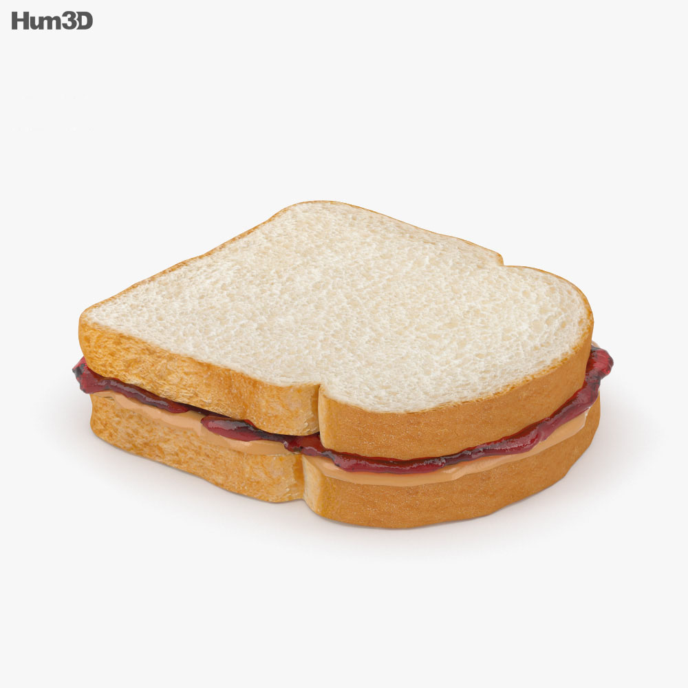

PB&J (a.k.a. Peanut Butter and Jelly Sandwich)

How tasty! What nostalgia! This classic sandwich can be made in a flash!
Base Ingredients:
- Bread
- Peanut Butter
- Jelly or Jam
Optional Ingredients:
- In place of (or in addition to) peanut butter, you can use any number of spreads:
- Nutella
- Cashew Butter
- Almond Butter
- Soft Chocolate Ganache
- Apple Butter
Steps:
- Spread the peanut butter evenly on one face of a slice of bread
- Spread the jelly/jam evenly on one face of another slice of bread
- Place one slice on the other such that the peanut butter and jelly are touching, and the bread slices are aligned
- Enjoy!
Additional Considerations:
- Some humans like their PB&J sandwiches divided prior to consumption. This is most effectively done after the sandwhich has been assembled
- If you plan on enjoying the sandwich later, you may find that the jam/jelly will cause the bread to become soggy. To avoid finding yourself in such a situation, you may put a thin layer of peanut butter on the slice of bread designated for Jelly, before applying the Jelly.